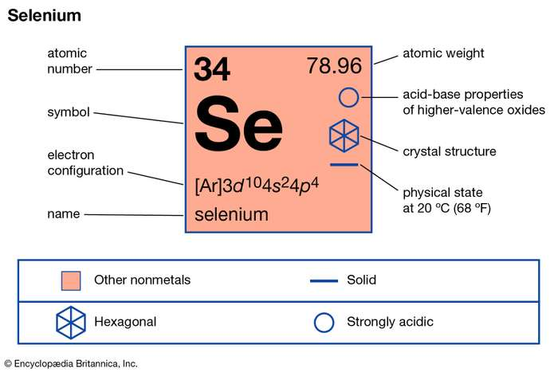
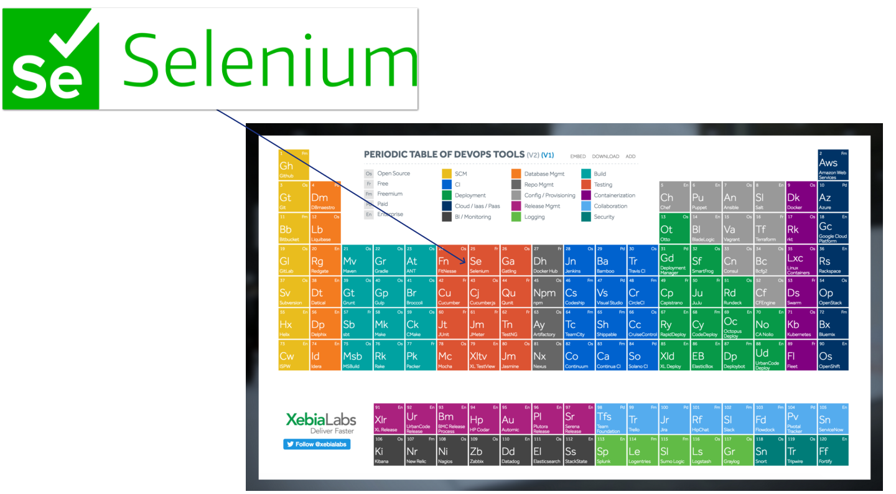
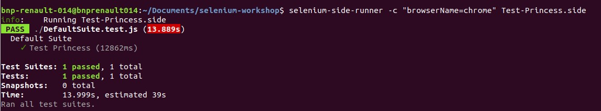
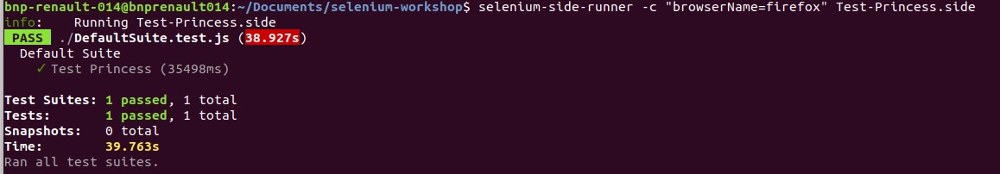

Qu'est ce que Selenium ?
C'est un complement alimentaire
Cela renforce le systeme immunitaire
C'est un composé chimique
Il fait parti du tableau prériodique de Mendeleiev
C'est un des nombreux outils Devops
Il s'agit d'une des suites d'utilitaires gratuites et open source permettant de tester automatiquement des applications web sur differents navigateurs et OS.
Pourquoi automatiser les tests fonctionnels ?
- La rédaction et la mise à jour de cahiers de tests est chronophage
- L'execution des tests peut être rébarbative
- Le cahier de tests est incompréhensible ou est devenu obsolète
Executer les mêmes tests sur toutes les plateforme Manuellement ?
- PC de bureau
- PC Portable
- Tablette
- SmartPhone
Selenium est composé de 3 utilitaires répondant à differents besoins de tests
- Selenium Webdriver
- Selenium Grid
- Selenium IDE
Historique
Début en 2004
Le premier module de base "JavaScriptTestRunner" a été créé par Jason Huggins à Chicago.
Ensuite avec des collegues ils ont proposés d'ouvrir le code rapidement et ont proposés des solutions open source en Java et Ruby
Selenium Grid
Patrick Lightbody developpe la premiere version de cet utilitaire permettant initialement de prendre des captures d'écran et d'envoyer des commandes selenium à differentes machines simultanéement.Selenium IDE
Shinya Kasatani au Japon developpe la premiere version de cet utilitaire permettant d'enregistrer et rejouer des tests facilement depuis une extension du navigateur.Differents cas d'usages
Un exemple d'usage simplifié à l'aide de Selenium IDE
Demo d'enregistrement et replay
- Télécharger l'extension Chrome et Firefox
- Télécharger le fichier .slide
- Lancer le test depuis Selenium IDE
... Puis utilisation en ligne de commande
Installer le lanceur et les drivers avec npm
npm install -g selenium-side-runner
npm install -g chromedriver
npm install -g geckodriver
selenium-side-runner -c "browserName=firefox" /path/to/file.side
selenium-side-runner -c "browserName=chrome" /path/to/file.side
Résultats
Avec driver Chrome:  Avec driver Firefox: Selenium Grid

Selenium Grid et un usage facilité avec Zalenium
Zalongo a developpé Zalenium pour facilité la mise en oeuvre de Selenium grid avec des containers Dockers